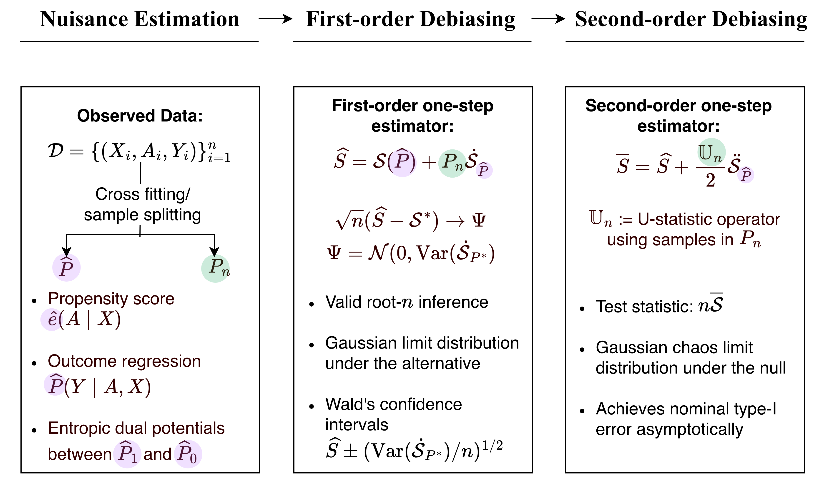
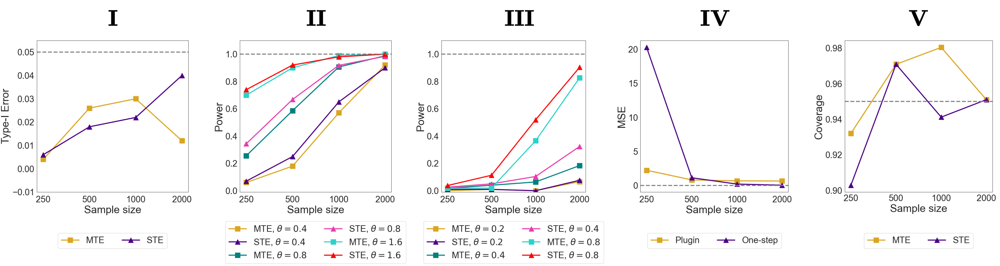

Sinkhorn Treatment Effects: A Causal Optimal Transport Measure
Highlights
- Classical causal summaries such as the average treatment effect (ATE) can miss changes in higher moments, tails, modality, and geometry of the outcome distribution. We target distributional treatment effects (DTEs): causal effects that compare the full counterfactual outcome distributions.
- We define the Sinkhorn treatment effect (STE) as the Sinkhorn divergence between the two counterfactual outcome laws. The resulting estimand is a regularized optimal transport discrepancy, with a ground cost that encodes the geometry of the outcome space.
- We characterize the smoothness of STE functional, showing it is first-order pathwise differentiable and second-order pathwise differentiable under the null of no DTE.
- We use this differentiability to construct efficient first- and second-order bias-corrected estimators of STE.
- Because the regularization parameter $\varepsilon$ controls the geometry-resolution tradeoff, we also propose an aggregated test over a finite grid of $\varepsilon$ values.
Why not only compare means?
In the binary treatment setting, we observe $Z=(X,A,Y) \in \mathcal{Z}$, where $X \in \mathcal{X}$ are confounders, $A\in\{0,1\}$ is treatment, and $Y \in \mathcal{Y}$ is the observed outcome. Under standard identification conditions, the observed law $P$ identifies the counterfactual outcome laws $P_1$ and $P_0$. The ATE compares only $\mathbb E_{P_1}[Y] - \mathbb E_{P_0}[Y]$.
While convenient for computation and inference, mean-based summaries can mask important effects that occur away from the center of the distribution or saturate, failing to distinguish between far and very far distributions. Distributional treatment effects address this by comparing the entire laws $P_1$ and $P_0$.
Kernel-based methods estimate counterfactual distributions via kernel mean embeddings (KME) into characteristic reproducing kernel Hilbert spaces (RKHS) and quantify DTE using maximum mean discrepancy (MMD), termed as MMD treatment effect (MTE). Although MMD metrizes weak convergence, it induces a flat geometry on the space of probability measures and may fail to capture meaningful geometric discrepancies between counterfactual distributions, especially when their supports weakly overlap or separate.
The estimand
The STE at a fixed regularization level $\varepsilon>0$ is $\mathcal{S}(P) = S_\varepsilon(P_1,P_0)$, where $P_a$ is the counterfactual law of $Y_a$ identified from the observed law $P$, and $S_\varepsilon$ is the debiased entropic optimal transport cost known as the Sinkhorn divergence.
Functional Representation under Identifiability
The key statistical object is the map from the observed law to the Sinkhorn divergence between identified counterfactual laws. We write this composition as
$$\mathcal{S}(P) = S_\varepsilon \circ J \circ \Psi (P),$$
- Counterfactual Mean Embedding: $\Psi(P) = (\psi^1(P), \psi^0(P))$ maps the observed law to the two counterfactual kernel mean embeddings.
- Canonical Isometric Embedding: $J$ embeds kernel embeddings of distributions into the Banach space in which the Sinkhorn divergence is analyzed.
- Sinkhorn Divergence: $S_\varepsilon$ maps the pair of embedded counterfactual distributions to the Sinkhorn divergence between them.
Smoothness Properties
- First-order pathwise differentiability: The functional $P \mapsto \mathcal{S}(P)$ is first-order pathwise differentiable at a general $P$ with efficient influence function $\dot{\mathcal{S}}_P: \mathcal{Z} \to \mathbb{R}$ (Lemma 3.1).
- Second-order pathwise differentiability: At the null hypothesis of no DTE, when $P_1 = P_0$, the first-order derivative of the Sinkhorn divergence vanishes. This degeneracy enables a second-order expansion, yielding a second-order efficient influence function $\ddot{\mathcal{S}}_P: \mathcal{Z} \times \mathcal{Z} \to \mathbb{R}$ (Theorem 3.2).
One-Step Estimator and Inference

Estimation pipeline. The observed data are split to construct an initial estimator $\widehat{P}$ and an empirical distribution $P_n$. The initial estimator is used to estimate nuisance quantities. The plug-in estimator $S_\varepsilon(\widehat{P}_1,\widehat{P}_0)$ is then debiased using the ones-step estimation. First-order debiasing yields an asymptotically linear estimator away from the null; second-order debiasing yields the test statistic for the null hypothesis with nominal type-I error control.
Aggregating over regularization levels
A single value of $\varepsilon$ may be poorly matched to the alternative: small $\varepsilon$ emphasizes fine geometric structure, while larger $\varepsilon$ yields a smoother discrepancy closer to kernel-based comparisons. We therefore consider a finite grid $\Xi$ of regularization values and combine evidence across scales using a max-type statistic. The aggregated test achieves a nominal type-I error asymptotically.
Simulations
To probe the sensitivity of MTE and STE, we consider two distinct regimes governing the separation between the counterfactual outcome distributions. In Exp (i) (mean shift), the counterfactual outcome laws differ through their means: $P_0=\mathcal{N}(0,\Sigma)$ and $P_1=\mathcal{N}(\theta\mathbf{1}_2,\Sigma)$. In Exp (ii) (covariance shift), the counterfactual outcome laws have the same mean but different covariance: $P_0=\mathcal{N}(0,\Sigma)$ and $P_1=\mathcal{N}(\mathbf{0}_2,\Sigma+\theta\Delta)$. In both settings, $\theta=0$ corresponds to the null and increasing $\theta$ corresponds to stronger alternatives.

Simulations. I: Type~I error of the MTE and STE under null (\(\theta=0.0\)); II: Power of MTE and STE under increasing separation between counterfactual distributions (increasing \(\theta\)) under Exp (i); III: Power of MTE and STE under increasing separation between counterfactual distributions (increasing \(\theta\)) under Exp (ii); IV: Mean squared error of plugin vs one-step STE for \(\theta = 1.6\) from Exp (i); V: Coverage of Wald-type $95\%$ confidence intervals for \(\theta = 1.6\) from Exp (i).
Citation
@article{agarwal2026sinkhorn,
title={Sinkhorn Treatment Effects: A Causal Optimal Transport Measure},
author={Agarwal, Medha and Luedtke, Alex},
journal={arXiv preprint arXiv:2605.08485},
year={2026}
}